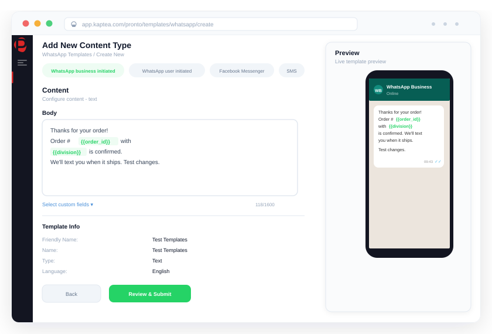

WhatsApp Business.
Enterprise-grade,
compliance-first.
The world's most widely used messaging channel, governed for regulated enterprise. Two-way conversations, Meta-approved template management, and AI-assisted agent inbox, all on carrier-grade infrastructure.

WhatsApp at enterprise scale creates problems most platforms weren't built to solve.
Template compliance is a manual liability
Every outbound message outside a session window requires a Meta-approved template. Without a governed workflow, teams use unapproved content, submissions pile up untracked, and a rejected template can halt a campaign at the worst possible moment.
Inbound conversations fall through the gaps
When a customer replies on WhatsApp, who picks it up? Without a proper agent inbox and routing logic, replies go unseen, conversations go cold, and the 24-hour session window closes before anyone responds, forcing a template-only restart.
Opt-in risk in regulated industries
WhatsApp requires explicit opt-in before any outbound message. Across large contact databases, with contacts added through multiple channels, managing opt-in status manually is error-prone, and a single wrong send is a regulatory event.
WhatsApp, governed from first message to final audit log.
Official WhatsApp Business API on carrier-grade infrastructure
Kaptea connects to WhatsApp Business API through Twilio, an official Meta Business Solution Provider (BSP). Every message is routed through fully certified infrastructure, with no grey-route risk, no shared message queues, and no co-mingling of customer data. Your WhatsApp Business Account, on dedicated infrastructure, from day one.
- Twilio BSP relationship: Meta-certified, fully compliant
- Dedicated instance, no shared tenancy with other businesses
- Send broadcast campaigns to large contact lists with approved templates
- Rich media support: images, audio, and video in campaigns and conversations
- Read receipts and delivery confirmation per message
- 180+ countries reachable via global carrier network
Template governance with Meta approval built in
Pronto manages the full WhatsApp template lifecycle: from creation through internal review, Meta submission, approval tracking, and version control. Templates are locked once approved. Amendments require a new change request. Every action is logged. For regulated organisations, this is the difference between an audit-ready process and a compliance exposure.
- Step-by-step template creation with variable and media support
- Internal approval workflow before Meta submission
- Real-time Meta approval status tracking
- Version history with full change log
- Division scoping: teams see only their approved templates
- AI content checks flag non-compliant language before submission
- Exportable audit log: who created, approved, and used every template
When a customer messages you, a 24-hour window opens for free-form replies. Outside this window, only approved templates can initiate contact. Kaptea tracks session state automatically, enforces the policy, and auto-closes stale conversations, keeping your agents and your compliance team on the right side of Meta's rules.
Read: WhatsApp in your contact centre: what compliance actually requires →
Two-way conversations with a purpose-built agent inbox
When customers reply, Pronto routes the conversation to the right agent based on skills, availability, and channel, with the full interaction history visible at a glance. Agents get AI-generated reply suggestions and contact summaries so they can respond faster, with more context, and without switching tools. Conversations can be transferred, snoozed, or closed with a single click.
- Unified inbox: WhatsApp alongside SMS, Voice, and social in one view
- Smart routing based on agent skills and real-time availability
- AI-assisted reply suggestions and message composition
- AI-generated contact summaries for instant context on every conversation
- Conversation transfer between agents with full history preserved
- Snooze and reopen conversations with timestamp tracking
- Labels and tagging for conversation categorisation and reporting
Workflow automation and CRM-triggered messaging
WhatsApp on Kaptea isn't just a send button. Incoming messages trigger automated workflows: route to an agent, send a template reply, update a CRM record, fire a webhook. Outbound messages are triggered by CRM events. The result is a WhatsApp channel that's connected to your business, not bolted on beside it.
- Incoming WhatsApp message as a workflow trigger
- Condition-based auto-replies using approved templates
- CRM integrations: Salesforce, Dynamics 365, HubSpot, Zoho, SAP
- CRM-triggered sends on events: appointments, case updates, payment reminders
- Delivery status and replies written back to CRM contact records
- Event streaming to Slack, Kafka, Webhook, PagerDuty, Datadog, and more
- A/B testing of WhatsApp templates with configurable split percentages
3×
Higher open rates than SMS.
WhatsApp messages are read
99.5%
Average delivery rate across
regulated enterprise customers
180+
Countries reachable via
Twilio BSP carrier network
8 weeks
From contract signature
to live WhatsApp deployment
"The ability to shut down a channel instantly (a red button to stop all traffic) was critical for us. And the team's responsiveness when we needed customisations was unlike anything we'd experienced with a technology vendor before."
Head of Customer Experience
National postal service operator, Public Sector & Logistics
99.5%
Average message delivery rate across all regulated enterprise customers
Days
Emergency channel shutdown capability: full traffic stop at the click of a button
8 wks
Typical deployment from contract to live, including WhatsApp BSP setup
10/10
NPS from regulated enterprise customers on team responsiveness and delivery
Common questions about WhatsApp
WhatsApp, the way enterprise demands it.
See how Kaptea brings governance, compliance, and two-way conversational capability to the world's most widely used messaging channel.
Book a Demo